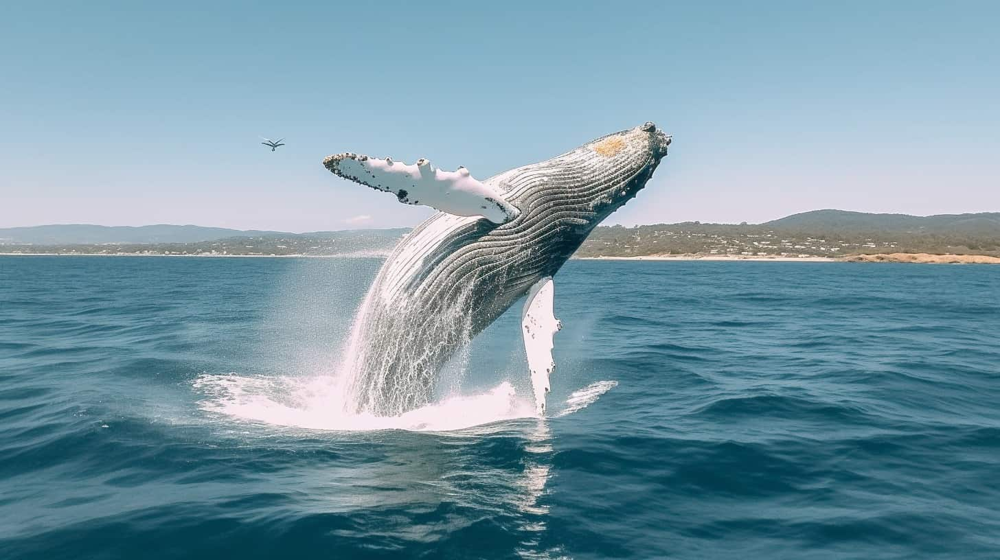

Discover some of the greatest geological stories on planet

Hiking in Newfoundland
Unesco World Heritage Sites
Offering UNESCO World Heritage Sites, sprawling national parks, picturesque seaside villages, a world-class food scene, and quite possibly the country’s friendliest locals, you’d think Newfoundland would be swarming with tourists. However, this Canadian island that sits off the eastern coast of the country, flanking Nova Scotia and Prince Edward Island, sees a mere fraction of the visitors of British Columbia and Alberta.
A Rugged, Remote Foodie Haven
“It’s a rugged remoteness. The glacial-swept highlands conjure up fairy tales, the mighty fjords breed a difficulty of exploration that boasts an incredible sense of accomplishment,” said Andy Nichols, expert outdoor guide of Great Canadian Trails. “To sum up the community here, it’s simple: It’s a place where no one locks their doors.” Offering UNESCO World Heritage Sites, sprawling national parks, picturesque seaside villages, a world-class food scene, and quite possibly the country’s friendliest locals, you’d think Newfoundland would be swarming with tourists. However, this Canadian island that sits off the eastern coast of the country, flanking Nova Scotia and Prince Edward Island, sees a mere fraction of the visitors of British Columbia and Alberta. Newfoundland’s most inspiring national park, Gros Morne, sees a quarter of the visitors of Alberta’s famed Banff National Park and Lake Louise—two parks that are anticipating more than 5 million visitors this year alone. If you’re craving hikes that both challenge and inspire; food that’s as local as you can possibly get (think fish caught off the harbor where you’re eating); and secluded campsites, skip the crowds of Alberta and head to Newfoundland instead. Get 1 year of American Vogue + a limited edition tote. Subscribe now. “Newfoundland has all that western Canada has, from soaring mountain ranges to deep valleys and gorges, yet it is truly untouched. You can go and hike in peak season with a handful of people, not thousands,” said Ian Stone, guide and partner of Great Canadian Trails. “You can experience a national park that is not bursting at the seams with people but bursting with natural surroundings, moments of peace. I feel this is the type of place that Banff was 100 years ago.”